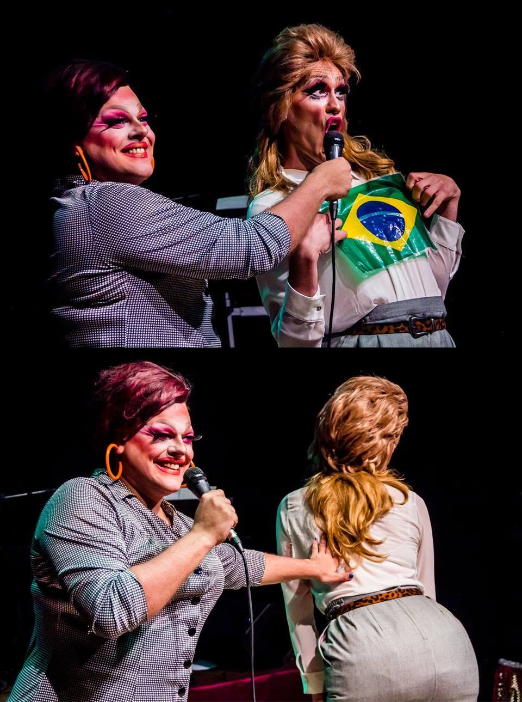
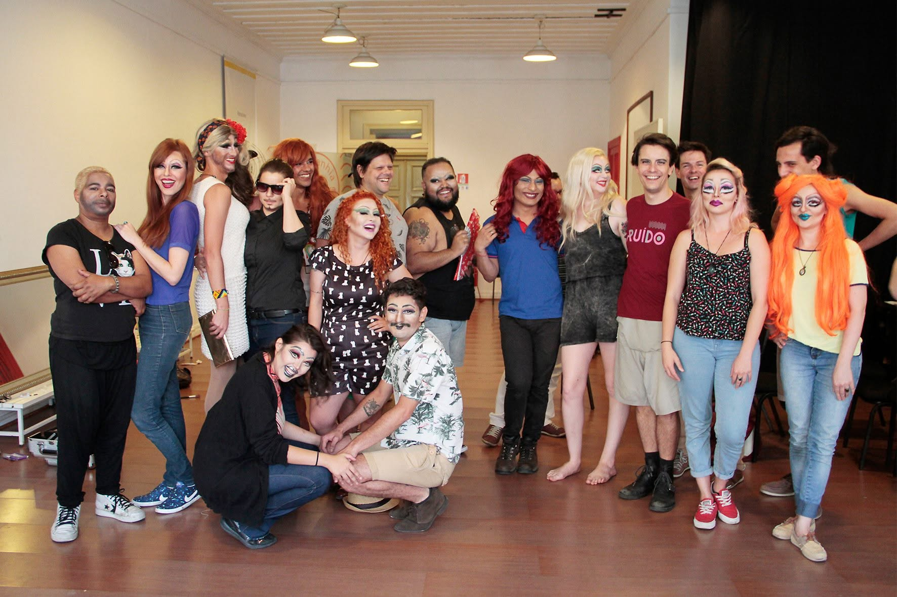
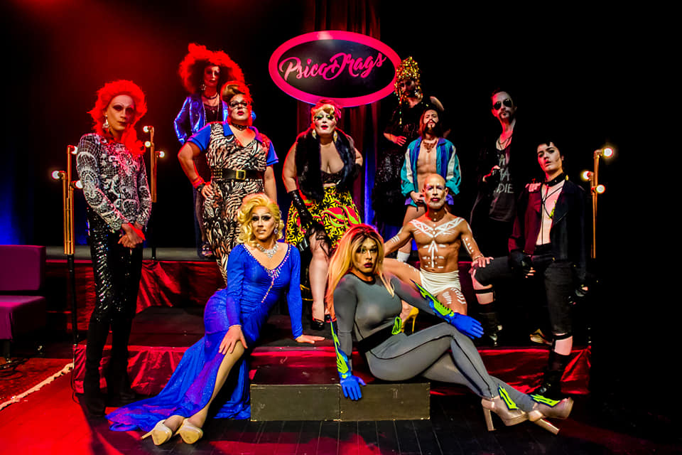

A primeira oficina itinerante de arte drag do Brasil. Mais de 20 cidades brasileiras, mais de 300 alunos e alunas. Ensina maquiagem, customização de acessórios e perucas, noções de criação performática — e, principalmente, conceitos ligados ao transformismo, ao gênero, à contextualização histórica e ao posicionamento crítico.
Com a drag queen Juana Profunda. Formato de cabaré com linguagem quase televisiva, misturando entrevistas, apresentações e brincadeiras com o público. Em 15 edições, reuniu mais de 50 artistas.
Coletivo derivado do Maravilhoso Cabaré, formado a partir da equipe reunida para o Festival Psicodália. Reúne 11 artistas do teatro, da música e da moda. Mostra Novos Repertórios (2018) · Ruído em Cena (2018) · Mostra Oficial do Festival de Curitiba (2022).


